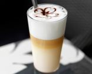
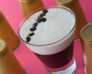

Tipos de bebidas
Tipos de bebidas
Hay tantas formas de disfrutar de esta bebida como de prepararla, así que te invitamos a probar algunas de las siguientes elaboraciones
Espresso
De origen italiano, muy aromático, color muy oscuro y sabor fuerte.
Cappuccino
Mezcla de espresso y leche vaporizada en igual proporción mezclados con cacao, chocolate o canela en polvo.
Americano
Espresso mezclado con una taza de agua caliente, reduciendo su cantidad de cafeína.
Latte
Espresso corto, 3 partes de leche vaporizada por encima y azúcar.
Mocaccino
Espresso mezclado con sirope o polvo de chocolate. Puede combinarse con crema de leche y añadir cacao, nata o crema batida.
Macchiato
Conocido en España como cortado y compuesto por espresso y leche vaporizada.

Bombón
Café puro o espresso mezclado con leche condensada.

Irlandés
Espresso mezclado con whisky, azúcar moreno y cubierto con crema de leche o nata.
Descafeinado
Café al que se le ha extraído la cafeína.